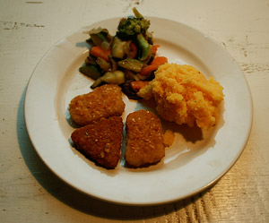

Vegi-Nuggets
5 von 6Karotten, Zucchetti, Aubergine, Broccoli, Zwiebeln kleinschneiden und andünsten. Vegi-Nuggets anbraten. Polenta in heisses Wasser einrühren. Mit Ketchup servieren.

Karotten, Zucchetti, Aubergine, Broccoli, Zwiebeln kleinschneiden und andünsten. Vegi-Nuggets anbraten. Polenta in heisses Wasser einrühren. Mit Ketchup servieren.

Montagsplausch Nr. 236. Der Abend hiess «Beni est à St.Tropez».